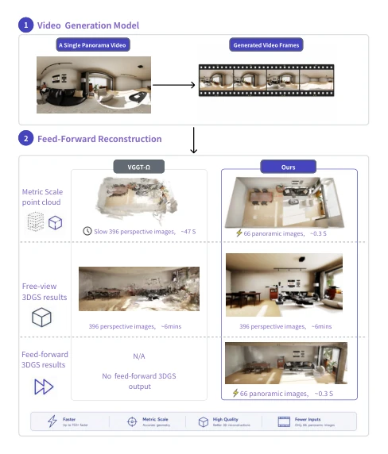
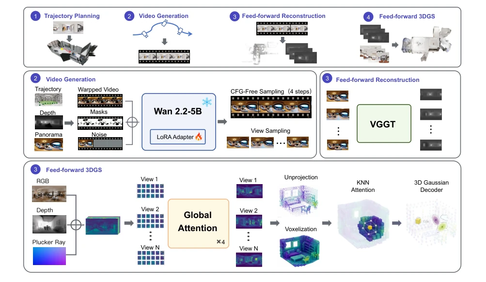
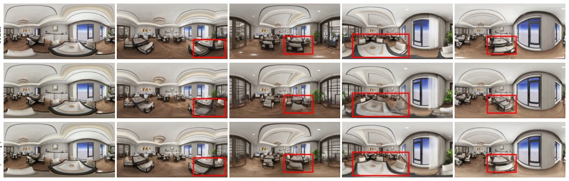
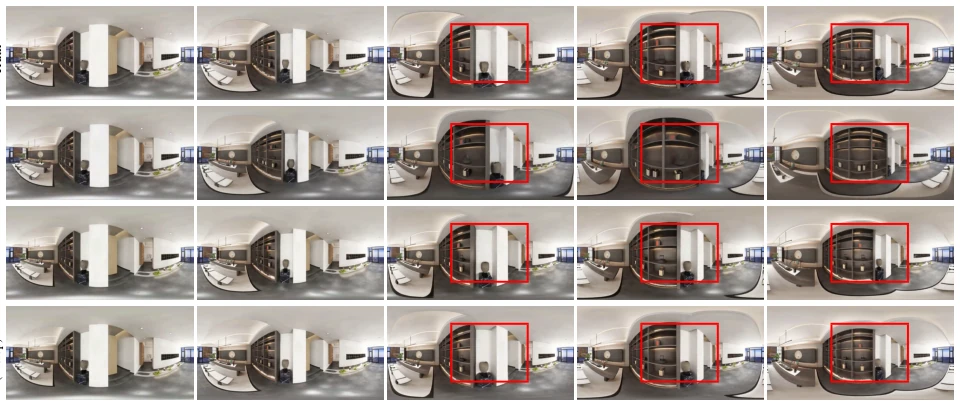
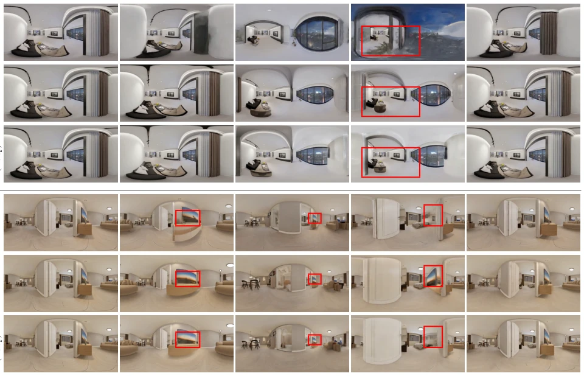
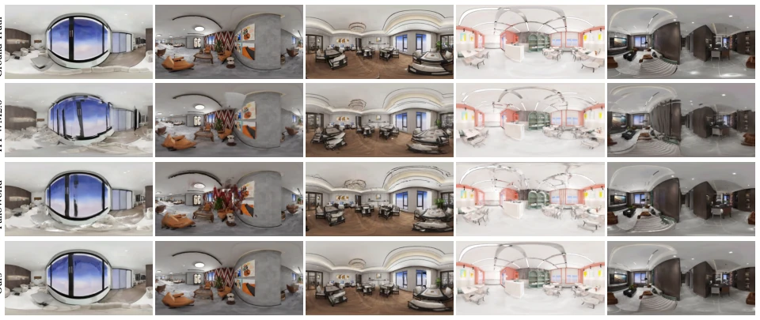

Genie Sim PanoWorld: An Infinite Indoor 3D World Generation Pipeline via Panoramic Scene Modeling and Simulation
Yongxin Su, Linjie Hou, Feng Wang, Jialin Tang, Zhijun Li, Qian Wang abspdf
论文点评Review
这篇论文试图用一张全景图“无中生有”造出一个可漫游的 3D 世界，对具身智能仿真资产生成很有吸引力。亮点是端到端无优化、4 步采样、单卡运行，确实解决了现有方法依赖多视图或高算力服务器的问题。但“无限”有点夸张，本质是生成式重建，几何精度依赖先验，可能存在幻觉。对于需要精确物理仿真的场景，生成的“数字孪生”是否足够真实仍需验证，不过作为快速原型生成器，确实比传统 NeRF 快多了。
This paper attempts to construct a navigable 3D world 'out of thin air' from a single panoramic image, which is highly attractive for embodied AI simulation asset generation. Highlights include end-to-end optimization-free inference, 4-step sampling, and single-GPU operation, effectively addressing the issue of existing methods relying on multi-view inputs or high-compute servers. However, 'infinite' is somewhat exaggerated; essentially, it is generative reconstruction where geometric accuracy relies on priors and may suffer from hallucinations. For scenarios requiring precise physical simulation, whether the generated 'digital twin' is sufficiently realistic remains to be verified, but as a rapid prototype generator, it is indeed significantly faster than traditional NeRF.
研究动机Motivation
传统 3D 重建依赖多视图和逐场景优化（如 NeRF [25]），成本高且无法泛化。单张全景图虽易获取，但缺乏视差，无法推断遮挡内容。现有全景视频生成方法（如 OmniRoam [21]、Matrix-3D [37]）要么缺乏度量轨迹控制导致无法规划避障路径，要么长距离运动下几何形变严重。此外，多数方法依赖多步 CFG 采样，需多 GPU 部署，难以在消费级硬件运行。本文旨在解决从单全景图到可漫游 3D 场景的 feed-forward 重建难题。
Traditional 3D reconstruction relies on multi-view inputs and per-scene optimization (e.g., NeRF [25]), incurring high costs and lacking generalization. While a single panoramic image is easily acquired, it lacks parallax and cannot infer occluded content. Existing panoramic video generation methods (e.g., OmniRoam [21], Matrix-3D [37]) either lack metric trajectory control, making obstacle avoidance path planning impossible, or suffer from severe geometric distortion during long-distance motion. Additionally, most methods rely on multi-step CFG sampling and require multi-GPU deployment, making them difficult to run on consumer-grade hardware. This paper aims to address the feed-forward reconstruction challenge from a single panoramic image to a navigable 3D scene.

Figure 1. We propose Genie Sim PanoWorld, which requires only an indoor panoramic image and can directly produce a metric-scale 3D point cloud, accurate poses, and feed-forward Gaussian results within seconds. It can also be provided directly to the downstream per-scene-optimized 3DGS to generate embodied intelligence that can use high-fidelity digital twin assets. 1. Introduction
方法Method
整体分为两阶段：轨迹可控全景视频生成 + 前馈 3D 重建。首先基于深度图构建 NavMesh 规划无碰撞 SE(3) 轨迹。视频生成采用 Wan2.2 骨干 + LoRA，注入几何扭曲条件与遮挡掩码，通过长短轨迹混合训练及 shortcut 模型实现 4 步无 CFG 采样。重建阶段使用改进的 VGGT 架构，直接处理 ERP 全景图，消除内参估计，采用体素对齐的高斯泼溅解码器，将多视图观测聚合为 3D 高斯原语。具体而言，视频生成器利用 NavMesh 确保路径无碰撞，通过混合训练平衡高保真与遮挡修复，并利用 shortcut 模型去除 CFG 依赖。重建器则通过全局注意力机制处理全景视角，利用 KNN 注意力增强局部几何关系，最终输出可实时渲染的 3D 高斯场景。该设计使得单全景图到 3D 场景的转换无需逐场景优化，显著降低了计算成本。
The overall approach is divided into two stages: trajectory-controlled panoramic video generation and feed-forward 3D reconstruction. First, a NavMesh is constructed based on depth maps to plan collision-free SE(3) trajectories. Video generation employs a Wan2.2 backbone + LoRA, injecting geometric distortion conditions and occlusion masks, achieving 4-step CFG-free sampling via mixed training of short and long trajectories and a shortcut model. The reconstruction stage utilizes an improved VGGT architecture, directly processing ERP panoramic images, eliminating intrinsic parameter estimation, and adopting a voxel-aligned Gaussian Splatting decoder to aggregate multi-view observations into 3D Gaussian primitives. Specifically, the video generator leverages NavMesh to ensure collision-free paths, balances high fidelity with occlusion repair through mixed training, and removes CFG dependency via the shortcut model. The reconstructor processes panoramic views through a global attention mechanism, enhances local geometric relationships using KNN attention, and ultimately outputs a real-time renderable 3D Gaussian scene. This design allows conversion from a single panoramic image to a 3D scene without per-scene optimization, significantly reducing computational costs.

Figure 2. Overview of Genie Sim PanoWorld. Stage 1 (Environment Perception & Trajectory Construction): A raw ERP panorama is processed by a depth estimator to build a dense point cloud and 3D mesh; a NavMesh is extracted from the traversable floor region and used to plan a collision-free SE(3) camera trajectory. Stage 2 (Latent Video Diffusion): For each planned pose, a geometry-warped ERP frame and its disocclusion mask are encoded by a frozen 3D VAE and concatenated with the noisy latent along the channel axis. A Latent Rectified-Flow DiT (Wan2.2-TI2V-5B + LoRA) denoises the sequence in 4 CFG-free steps via shortcut-model sampling; the frozen VAE decoder produces the final T-frame panoramic video. Stage 3 (Feed-Forward 3D Reconstruction & Voxel-Based Gaussian Splatting): The generated pa
Evaluated on InteriorGS and RealSee3D. Comparison baselines include Matrix-3D, OmniRoam, etc. Metrics cover video quality (PSNR, FID) and trajectory accuracy (ATE, RRE). Results show that the proposed method significantly outperforms baselines under long-distance traversal, with PSNR improvement of approximately 2dB, and lower ATE error. Ablation studies indicate that mixed training and the shortcut model are crucial for long-range consistency and inference speed. Zero-shot generalization tests also verify the model's robustness across different scenes. Additionally, the authors propose the PanoHome dataset, addressing the lack of editable 3D assets and precise metrics in existing datasets, providing a richer benchmark for subsequent research. Experiments also demonstrate the capability to run on a single consumer-grade GPU, proving its practicality.

Figure 3. Qualitative comparison on a long-range (r=4) indoor traversal. Matrix-3D degrades into blurry, structurally inconsistent content in disoccluded regions as the camera travels farther, while our full model remains sharp and geometrically coherent. GT shown for reference; per-component ablation in Table 4.

Figure 4. Qualitative comparison at 480 × 960 (r=1) including OmniRoam. OmniRoam produces blurry, trajectory-inconsistent frames that diverge progressively from the intended path, while our model remains sharp and geometrically faithful. GT shown for reference; additional scenes in the supplement.

Figure 5. Zero-shot qualitative comparison on RealSee3D (no ground truth available). OmniRoam exhibits trajectory-inconsistent wall- penetration artifacts (frames pass through walls), which is why its metrics are not reported in Table 3. Our model generates geometrically faithful content and respects collision constraints with only 4 denoising steps. Two representative scenes shown; each row group is one scene.

Figure 6. Qualitative comparison of novel view synthesis on the InteriorGS dataset (60 scenes). We evaluate all methods under the 4@4 setting.